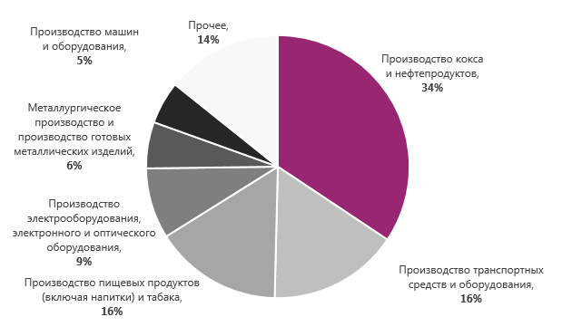
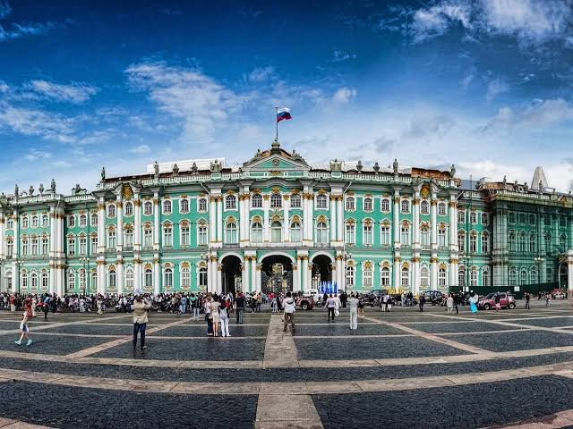

Санкт-Петербург в экономике, культуре и туризме
Экономика
Экономика Санкт-Петербурга занимает 4-е место в России по объему валового регионального продукта (ВРП) и отличается многоотраслевым и стабильным характером.
График экономики Санкт-Петербурга

Страница подробностей о экономики Санкт-Петербугра
- Промышленность: Тяжелая индустрия, судостроение, транспортное машиностроение, энергомашиностроение и фармацевтика.
- Торговля и логистика: Оптовая и розничная торговля, крупный морской и сухопутный транспортный узел.
- Крупный бизнес: Город выступает налоговой резиденцией для гигантов вроде ПАО «Газпром» и ПАО «Газпром нефть».
Культура
Санкт-Петербург — признанная культурная столица России, чей облик и характер сформировались на стыке европейских и русских традиций.
Эрмитаж

Подробнее о культуре Санкт-Петербурга
- В городе работают сотни галерей и сокровищниц, среди которых выделяется Эрмитаж и Русский музей.
- Театр и музыка: Классические традиции балета и оперы поддерживают знаменитые сцены, включая Мариинский театр.
- Интеллигентный дух: Жители города ценят вежливость, любовь к книгам, трамвайным поездкам, белым ночам и долгим пешим прогулкам.
Туризм
Туризм в Санкт-Петербурге — это классический культурно-познавательный отдых, сосредоточенный вокруг архитектуры Российской империи, искусства, рек и каналов. Город стабильно входит в число главных туристических направлений России.
Катание на теплоходах
 Больше о прекрасных мест Санкт-Петербурга
Больше о прекрасных мест Санкт-Петербурга
Топ-достопримечательности при посещение Санкт-Петербурга
- Эрмитаж
- Исаакиевский собор
- Петропавловская крепость